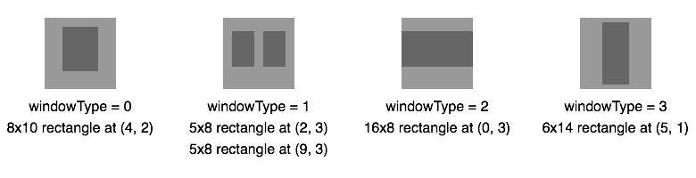
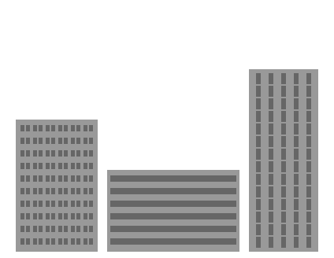
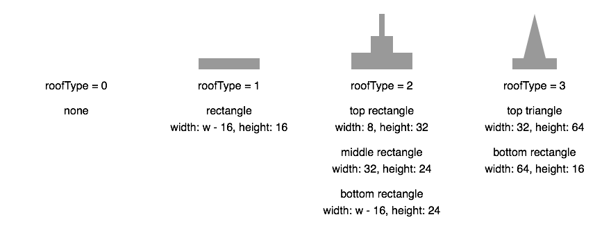
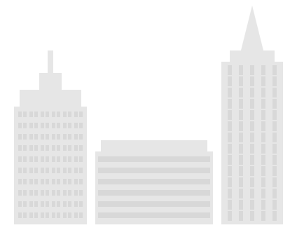

context.fillStyle will set the color for all future fills such as
context.fillRect(). It's important to note theat context.fillStyle
is not a method, it is an attribute. You set it like so:
context.lineTo(x, y) creates a path from the current point - default (0,0) -
to the point (x, y). In order to see the line you must call context.stroke().
context.save() saves all of the properties of the context. Then, when you call
context.restore() it will reset all changes to the context you've made.
This code will produce the image below (note how the second rectangle is black
and closer to the original origin despite calling translate and setting the
fillStyle earlier):
context.scale(percentX, percentY) scales the x and y coordinates of the context, making drawings
larger or smaller.
This code will produce the image below (note that all rectangles are defined to be the same size
in the code are drawn in different sizes due to the scale of the context):
context.translate(x, y) shifts the origin of the context (where the (0,0) point is)
right by x and down by y. This allows you to draw execute multiple commands in a specific
area of the context more easily.
This code will produce the image below (note how the fillRect commands are
relative to the translation point (100,100)):
Math.round(), Math.floor() and Math.ceil() will round a number to an integer.
Math.floor() will always round down while Math.ceil() will always round up.
Math.round() will round to the closest integer, either up or down.
Math.random() will produce a random decimal betweek 0 and 1. Calling it many
times will produce a different random number each time.
Often you will multiple Math.random() by another number to get a random
integer larger than 1. You may also call Math.floor() or Math.ceil() on the result
to get an rounded integer.
In the third stage of the Cityscape Challenge, we will add some variety to the
buildings by varying the types of windows in the offices and the types of roofs
on the buildings. Then, we will create and draw a random building.
Lesson: Draw Buildings with Four Types of Windows
In this example, we modify the drawFrenchFlag() function to draw the flags
of France, Colombia, and Thailand.
We tell the drawFlag() function which flag to draw by passing it a value that
is stored in the country parameter. Then, in the switch statement, we
draw a French flag if country = 'France', a Colombian flag if country = 'Colombia',
and a Thai flag if country = 'Thailand'.
Try drawing a Thai flag instead of a Colombian flag to see what it looks like.
This is a lesson, not a challenge, the code runs automatically.
But change it! Play with it! Click "Run" to see your changes.
Run
Run and Focus Canvas
Reset
Canvas
(your drawing will display here)
Challenge 1
Update the drawBuilding() function that you wrote in Stage 2 Challenge 3
to draw four types of windows.
Start by adding a windowType parameter to the drawBuilding() function:
drawBuilding(x, y, units, floors, windowType).
Inside the drawBuilding() function, remove the code you wrote to draw a rectangle
for each window, and replace it with "drawWindow(windowType);".
Then find the code where we define the function drawWindow().
Inside the drawWindow() function, add a switch statement with four cases. We
will draw four different types of windows depending if windowType = 0, 1, 2, or 3.
The dimensions of the four window types are given below:


Challenge 1 Sample Solution
Note: Since all four window types use the same dark gray color (
#666666
), set the context.fillStyle in the drawBuilding() function before calling drawWindow().
Draw three buildings with different sizes and window types.
Draw one building sitting on the ground at (20, 320)
with 6 office units across, 10 floors, and type 1 windows.
Draw a second building at (136, 320) with 10 office units across,
6 floors, and type 2 windows.
Draw a third building at (316, 320) with 5 office units across,
14 floors, and type 3 windows.
If your drawing looks like the image to the right, mark the challenge
as complete by selecting "Yes, it looks good".
Previous Challenge:
View your
code from
Stage
2
Challenge
3
to use on this challenge.
Code Missing:
You have not yet entered any code in to the previous challenge:
Stage
2
Challenge
3
Stage
2
Challenge
3
Editor
(write code below)
var canvas = document.getElementById('granular_basic_cityscape_stage3_challenge1');
var context = canvas.getContext('2d');
function drawBuilding(leftX, groundY, units, floors) {
// YOUR CODE FOR DRAWING A BUILDING HERE
}
function drawWindow(windowType) {
// YOUR CODE FOR DRAWING THE FOUR DIFFERENT TYPES OF WINDOWS HERE
}
Message Log
This is a lesson, not a challenge, the code runs automatically.
But change it! Play with it! Click "Run" to see your changes.
Run
Run and Focus Canvas
Reset
Canvas
(your drawing will display here)
Lesson: Draw Buildings with Four Types of Roofs
In this example, we add a triangle to the top of the building's roof.
To draw the roof, we create a function called drawRoof() and pass it the
width of the building. We pass it the width of the building because we want
to center the roof and scale the roof to fit the building.
To make the roof a little easier to draw, we use context.translate() to
move to the center of the roof and the top of the triangle.
To draw a filled triangle, we use context.lineTo() to draw a polygon and
context.fill() to fill it. We don't have to set the context.fillStyle because
the roof is the same color as the building.
Change the number of office units on a floor of the building to a number between 4 and 8.
Note how the roof adjusts to fit the size of the building.
The roof doesn't work when the number of office units is smaller than 4 and
it doesn't look good when it's greater than 8. We will fix those issues later.
var canvas = document.getElementById('granular_basic_cityscape_stage3_example2');
var context = canvas.getContext('2d');
function drawBuilding(leftX, groundY, units, floors) {
var w = 16 * units + 8;
var h = 16 * floors + 8;
var x = leftX;
var y = groundY - h;
context.save();
context.translate(x, y);
context.fillStyle = '#999999';
context.fillRect(0, 0, w, h);
drawRoof(w);
context.restore();
}
function drawRoof(w) {
context.save();
context.translate(w / 2, -96);
context.beginPath();
context.moveTo(0, 0);
context.lineTo(16, 64);
context.lineTo(-16, 64);
context.closePath();
context.fill();
context.fillRect(-24, 64, 48, 16);
context.fillRect(-(w - 16) / 2, 80, w - 16, 16);
context.restore();
}
drawBuilding(100, 320, 6, 12);
Message Log
This is a lesson, not a challenge, the code runs automatically.
But change it! Play with it! Click "Run" to see your changes.
Run
Run and Focus Canvas
Reset
Canvas
(your drawing will display here)
Challenge 2
Update the drawBuilding() function to draw four types of roofs.
Start by adding a roofType parameter to the drawBuilding() function. Then,
inside the drawBuilding() function, add a call to drawRoof(w, roofType) after
drawing the building's gray rectangle and before changing the context.fillStyle
to draw the windows.
Inside the drawRoof() function, add a switch statement with four cases.
The dimensions of the four window types are given below, where w is the width of the building:

Challenge 2 Sample Solution
Note: Since all four roof types use the same gray color as the building (
#666666
), we don't have to change the context.fillStyle in the drawBuilding() function before calling
drawRoof(). Also, for a case that does nothing, either leave the case out or include the case with
a comment explaining what it is supposed to do (make sure to include the break statement).
Draw three buildings with different sizes, window, and roof types.
Draw one building sitting on the ground at (20, 320) with 6 office units
across, 10 floors, type 1 windows, and a type 2 roof.
Draw a second building at (136, 320) with 10 office units across, 6 floors,
type 2 windows, and a type 1 roof.
Draw a third building at (316, 320) with 5 office units across, 14 floors,
type 3 windows, and a type 3 roof.
If your drawing looks like the image to the right, mark the challenge
as complete by selecting "Yes, it looks good".
Previous Challenge:
View your
code from
Stage
3
Challenge
1
to use on this challenge.
Code Missing:
You have not yet entered any code in to the previous challenge:
Stage
3
Challenge
1
Stage
3
Challenge
1
Editor
(write code below)
var canvas = document.getElementById('granular_basic_cityscape_stage3_challenge2');
var context = canvas.getContext('2d');
function drawBuilding(leftX, groundY, units, floors, windowType) {
// YOUR CODE FOR DRAWING A BUILDING HERE
}
function drawWindow(windowType) {
// YOUR CODE FOR DRAWING THE FOUR DIFFERENT TYPES OF WINDOWS HERE
}
function drawRoof(w, roofType) {
// YOUR CODE FOR DRAWING THE FOUR DIFFERENT TYPES OF ROOFS HERE
}
Message Log
This is a lesson, not a challenge, the code runs automatically.
But change it! Play with it! Click "Run" to see your changes.
Run
Run and Focus Canvas
Reset
Canvas
(your drawing will display here)

Lesson: Draw Buildings with a Random Number of Floors
Right now, you have a drawBuilding() function that will draw a building for
you if you tell it how many office units across it is, how many floors it has,
the type of windows in its office units, and the type of roof it has.
The next step is generating a building randomly, starting with the number of floors.
In this example, we draw a random number of flags and select the type of flag randomly.
To generate a random number, we use the function Math.random(). Math.random() returns
a random number between 0 and 1, including 0 but not including 1.
By multiplying Math.random() by 6, we get a random number between 0 and 6. However,
the random number will be a decimal. To convert it to an integer, we use the function
Math.floor(), which rounds a decimal down. This will give us a random integer between
0 and 5, so either 0, 1, 2, 3, 4, or 5.
To get an integer between 3 and 8, we use 3 + Math.floor(6 * Math.random()).
In the code for this example, we are drawing 2-5 flags. To randomize the type of flag,
we changed country to a number.
If country = 0, we will draw a French flag; if country = 1, we will draw a Colombian
flag; and if country = 2, we will draw a Thai flag.
Press "Run" to change the number and type of flag drawn.
Can you figure out how you would edit the code to randomize the type of each individual
flag in the drawing?
var canvas = document.getElementById('granular_basic_cityscape_stage3_example3');
var context = canvas.getContext('2d');
function drawFlag(country) {
context.save();
switch (country) {
case 0:
context.fillStyle = '#0055A4';
context.fillRect(0, 0, 30, 60);
context.fillStyle = '#FFFFFF';
context.fillRect(30, 0, 30, 60);
context.fillStyle = '#EF4135';
context.fillRect(60, 0, 30, 60);
break;
case 1:
context.fillStyle = '#FCD116';
context.fillRect(0, 0, 90, 30);
context.fillStyle = '#003893';
context.fillRect(0, 30, 90, 15);
context.fillStyle = '#CE1126';
context.fillRect(0, 45, 90, 15);
break;
case 2:
context.fillStyle = '#ED1C24';
context.fillRect(0, 0, 90, 60);
context.fillStyle = '#FFFFFF';
context.fillRect(0, 10, 90, 40);
context.fillStyle = '#241D4F';
context.fillRect(0, 20, 90, 20);
break;
}
context.restore();
}
var flagType = Math.floor(3 * Math.random());
var flagCount = 2 + Math.floor(4 * Math.random());
context.save();
for (var i = 0; i < flagCount; i = i + 1) {
drawFlag(flagType);
context.translate(100, 60);
}
context.restore();
Message Log
This is a lesson, not a challenge, the code runs automatically.
But change it! Play with it! Click "Run" to see your changes.
Run
Run and Focus Canvas
Reset
Canvas
(your drawing will display here)
Challenge 3
Instead of passing a number into your drawBuilding() function for the
number of office units on a floor, pass a variable with a random integer
between 6 and 20 (including 6 and 20).
Press "Run" multiple times to make sure the drawBuilding() function is drawing
a building with a random number of floors.
Then, once you feel satisfied with your drawings, mark the challenge as complete by
selecting "Yes, it looks good".
Previous Challenge:
View your
code from
Stage
3
Challenge
2
to use on this challenge.
Code Missing:
You have not yet entered any code in to the previous challenge:
Stage
3
Challenge
2
Stage
3
Challenge
2
Editor
(write code below)
var canvas = document.getElementById('granular_basic_cityscape_stage3_challenge3');
var context = canvas.getContext('2d');
function drawBuilding(leftX, groundY, units, floors, windowType, roofType) {
// YOUR CODE FOR DRAWING A BUILDING HERE
}
function drawWindow(windowType) {
// YOUR CODE FOR DRAWING THE FOUR DIFFERENT TYPES OF WINDOWS HERE
}
function drawRoof(w, roofType) {
// YOUR CODE FOR DRAWING THE FOUR DIFFERENT TYPES OF ROOFS HERE
}
// GENERATE A RANDOM NUMBER BETWEEN 6 AND 20 (INCLUDING 6 AND 20) AND STORE IT IN A VARIABLE HERE
// USE THE VARIABLE TO DRAW A BUILDING WITH A RANDOM NUMBER OF FLOORS HERE
Message Log
This is a lesson, not a challenge, the code runs automatically.
But change it! Play with it! Click "Run" to see your changes.
Run
Run and Focus Canvas
Reset
Canvas
(your drawing will display here)
Lesson: Draw Completely Random Buildings
Now that you know how to randomize the number of floors in a building, you
are going to randomize the number of office units, the type of windows, and
the type of roof, too.
But before you do that, we are going to create a function for generating random integers.
Math.random() is great for generating random decimals, but generating random
integers is more complicated. It takes more steps and it's easy to make a mistake.
In this example, the randomInteger() function takes a whole number, and returns a
random integer between 0 and that whole number (including 0 and the whole number).
For example, randomInteger(10) returns integers between 0 and 10, including 0 and 10.
We use the randomInteger() function to draw a rectangle with a random size and position.
Press "Run" to see the rectangle's size and position change.
var canvas = document.getElementById('granular_basic_cityscape_stage3_example4');
var context = canvas.getContext('2d');
function randomInteger(max) {
var i = Math.floor((max + 1) * Math.random());
return i;
}
var x = randomInteger(200);
var y = randomInteger(100);
var w = randomInteger(400);
var h = randomInteger(200);
context.save();
context.fillStyle = '#8A2BE2';
context.fillRect(x, y, w, h);
context.restore();
Message Log
This is a lesson, not a challenge, the code runs automatically.
But change it! Play with it! Click "Run" to see your changes.
Run
Run and Focus Canvas
Reset
Canvas
(your drawing will display here)
Challenge 4
Before we can use the randomInteger() function to draw random buildings,
we need to make a change to it.
Right now, randomInteger() returns an integer between 0 and max. Since we
don't want to draw buildings with 0 floors or 0 office units on a floor, we
need it to return an integer between min and max, including min and max.
Change the randomInteger() function so it returns an integer between a
min value and a max value, including those two values.
Then use the randomInteger() function to draw a random building with 6-20
floors, 4-10 office units on a floor, and random window and roof types.
Note: If you want to restrict the type of roof depending on the width of the
building, you can do that with an if statement. For our cityscape, we randomly
choose a roofType between 0-1 if units > 8, a roofType between 0-2 else if
units > 6, and a roofType between 0-3 for any other number of office units.
Press "Run" multiple times to make sure the drawBuilding() function is really
drawing a random building.
Then, once you feel satisfied with your drawings, mark the challenge as complete by
selecting "Yes, it looks good".
Previous Challenge:
View your
code from
Stage
3
Challenge
3
to use on this challenge.
Code Missing:
You have not yet entered any code in to the previous challenge:
Stage
3
Challenge
3
Stage
3
Challenge
3
Editor
(write code below)
var canvas = document.getElementById('granular_basic_cityscape_stage3_challenge4');
var context = canvas.getContext('2d');
function drawBuilding(leftX, groundY, units, floors, windowType, roofType) {
// YOUR CODE FOR DRAWING A BUILDING HERE
}
function drawWindow(windowType) {
// YOUR CODE FOR DRAWING THE FOUR DIFFERENT TYPES OF WINDOWS HERE
}
function drawRoof(w, roofType) {
// YOUR CODE FOR DRAWING THE FOUR DIFFERENT TYPES OF ROOFS HERE
}
function randomInteger(min, max) {
// YOUR CODE FOR GENERATING A RANDOM INTEGER BETWEEN MIN AND MAX, INCLUDING MIN AND MAX, HERE
}
// GENERATE RANDOM NUMBERS FOR UNITS, FLOORS, WINDOWTYPE, AND ROOFTYPE HERE
// USE THOSE RANDOM NUMBERS TO DRAW A RANDOM BUILDING HERE
Message Log
This is a lesson, not a challenge, the code runs automatically.
But change it! Play with it! Click "Run" to see your changes.